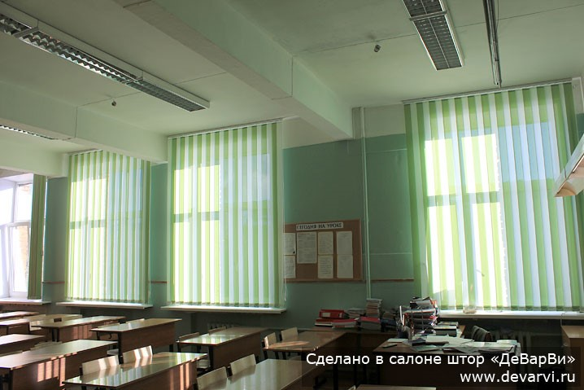
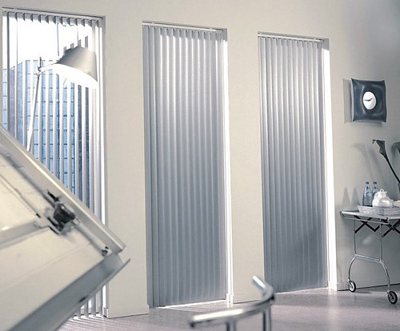
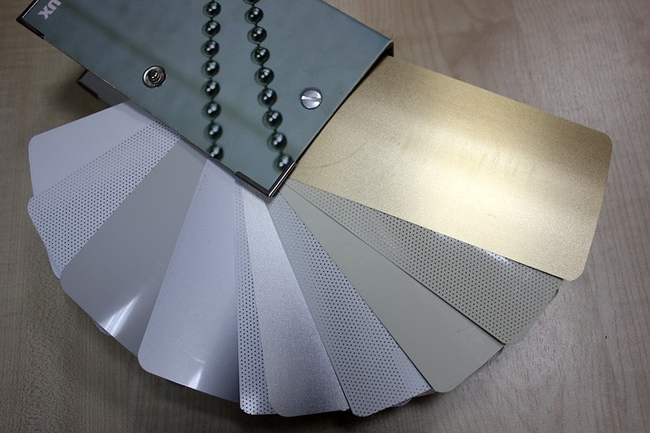

Жалюзи вертикальные тканевые
Вертикальные тканевые жалюзи – это самый распространенный способ защиты от солнца и любопытных глаз. Они подходят для самых разных помещений. Сравнительно невысокая цена, функциональность и удобство использования сделали вертикальные жалюзи незаменимым элементом декора окна и в офисе, и в университете, и в институте, и в школе, и в детском саду, и в поликлинике. Также неплохо смотрятся они и в домашней обстановке. Все это происходит потому, что огромный выбор цветов, фактур и вариантов позволяет подобрать именно ту «изюминку», которая нужна именно для этого помещения.
Вертикальные тканевые жалюзи удобны в использовании – световой поток регулируется простым поворотом ламелей. Все ткани имеют специальную пыле-водо-грязе отталкивающую пропитку. Поэтому просты в уходе. Если вдруг они как-то испачкались, то их всегда можно протереть влажной тряпочкой и жалюзи снова будут как новые.
Наша фирма подберет самые лучшие вертикальные тканевые жалюзи именно для Вашего помещения. Мы имеем колоссальный опыт работы с детскими школьными и дошкольными учреждениями. Также в число наши клиентов входит несколько научно-исследовательских и учебных институтов и один Университет. При необходимости, мы готовы участвовать в тендере. Опыт изготовления и установки жалюзи на тендерной основе имеется.
Наши высококлассные специалисты осуществят профессиональный замер и монтаж в любых помещениях.
Подробнее: Жалюзи вертикальные тканевые Жалюзи алюминиевые вертикальные
Очень интересным вариантом оформления окна являются вертикальные алюминиевые жалюзи. Ламели этих жалюзи изготовлены из алюминиевой ленты шириной 89 мм с перфорацией или без. Внизу они могут быть скреплены металлической цепочкой или висеть свободно.
Алюминиевые вертикальные жалюзи прекрасно смотрятся в интерьерах оформленных в стиле минимализм или техно. Офисному помещению эти жалюзи придадут неподражаемую индивидуальность. В помещениях с повышенными требованиями пожарной и санитарной безопасности такие жалюзи незаменимы. Уход за ними состоит только в протирке ламелей по необходимости, а огнеустойчивость обеспечивается свойствами алюминия.
В медицинских учреждениях, школах, гимназиях и других официальных зданиях их применение оправданно и очень украшает помещения. Также вертикальные алюминиевые жалюзи наиболее вандалоустойчивы относительно жалюзи других типов. Они не подвержены выгоранию и потере формы или скручиванию.
Вертикальные алюминиевые жалюзи возможно изготовить любых размеров. Дизайнеры нашего Салона подберут самые лучшие варианты для любого помещения, сделают замеры, оформят заказ на жалюзи по индивидуальным размерам и направят монтажников для качественной установки изделий.
 Жалюзи вертикальные мультифактурные
Мультифактурные вертикальные жалюзи – это жалюзи сделанные из нескольких видов ламелей. Часто это комбинация из двух или трех цветов, разделенных металлической вставкой. Комбинируют как ламели с одинаковой фактурой и разными цветами, так и разные фактуры, в том числе и ткань – ткань и ткань – пластик с одинаковыми или разными цветами.
Такие комбинации позволяют создавать рисунки любой сложности — от арок и ламбрекенов до оригинальных геометрических форм.
Мультифактурные жалюзи – это прекрасное решение для тех кто хочет создать эксклюзивный декор используя современные технологии. Обладая всеми преимуществами вертикальных жалюзи, мультифактурные жалюзи еще к этому добавляют возможность создавать эффект «шикарных штор». Они надежны, удобны, красивы. Мультифактурные жалюзи прекрасно смотрятся в детских садах, школах, офисах, общественных помещениях, дома, в коттедже, в квартире.
Существует две возможности заказа мультифактурных жалюзи. Первая – выбрать из довольно большого числа стандартных готовых рисунков тот, который нравится больше всего. Вторая – нарисовать индивидуальный эскиз. В этой ситуации дизайнеры нашего Салона всегда помогут и подскажут наилучший вариант. Далее необходимо подобрать подходящий цвет и фактуру. После этого специалисты на производстве изготовят жалюзи. Если есть необходимость, то монтажники нашего Салона доставят и установят вертикальные мультифактурные жалюзи.